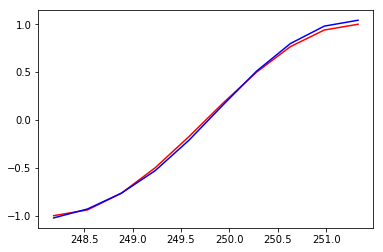
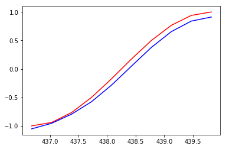

%matplotlib inline import torch import torch.nn as nn from torch.nn import functional as F from torch import optim import numpy as np from matplotlib import pyplot as plt import matplotlib.animation import math, random torch.__version__
3.3 通过Sin预测Cos¶
在介绍循环神经网络时候我们说过，循环神经网络由于其的特殊结构，十分十分擅长处理时间相关的数据，下面我们就来通过输入sin函数，输出cos函数来实际使用。 首先，我们还是定义一些超参数:
TIME_STEP = 10 # rnn 时序步长数 INPUT_SIZE = 1 # rnn 的输入维度 DEVICE = torch.device("cuda" if torch.cuda.is_available() else "cpu") H_SIZE = 64 # of rnn 隐藏单元个数 EPOCHS=300 # 总共训练次数 h_state = None # 隐藏层状态
由于是使用sin和cos函数，所以这里不需要dataloader，我们直接使用Numpy生成数据，Pytorch没有π这个常量，所以所有操作都是用Numpy完成:
steps = np.linspace(0, np.pi*2, 256, dtype=np.float32) x_np = np.sin(steps) y_np = np.cos(steps)
生成完后，我们可视化一下数据:
plt.figure(1) plt.suptitle('Sin and Cos',fontsize='18') plt.plot(steps, y_np, 'r-', label='target (cos)') plt.plot(steps, x_np, 'b-', label='input (sin)') plt.legend(loc='best') plt.show()
下面定义一下我们的网络结构：
class RNN(nn.Module): def __init__(self): super(RNN, self).__init__() self.rnn = nn.RNN( input_size=INPUT_SIZE, hidden_size=H_SIZE, num_layers=1, batch_first=True, ) self.out = nn.Linear(H_SIZE, 1) def forward(self, x, h_state): # x (batch, time_step, input_size) # h_state (n_layers, batch, hidden_size) # r_out (batch, time_step, hidden_size) r_out, h_state = self.rnn(x, h_state) outs = [] # 保存所有的预测值 for time_step in range(r_out.size(1)): # 计算每一步长的预测值 outs.append(self.out(r_out[:, time_step, :])) return torch.stack(outs, dim=1), h_state # 也可使用以下这样的返回值 # r_out = r_out.view(-1, 32) # outs = self.out(r_out) # return outs, h_state
下面我们定义我们的网络：
rnn = RNN().to(DEVICE) optimizer = torch.optim.Adam(rnn.parameters()) # Adam优化，几乎不用调参 criterion = nn.MSELoss() # 因为最终的结果是一个数值，所以损失函数用均方误差
由于没有测试集，所以我们训练和测试写在一起了：
rnn.train() plt.figure(2) for step in range(EPOCHS): start, end = step * np.pi, (step+1)*np.pi # 一个时间周期 steps = np.linspace(start, end, TIME_STEP, dtype=np.float32) x_np = np.sin(steps) y_np = np.cos(steps) x = torch.from_numpy(x_np[np.newaxis, :, np.newaxis]) # shape (batch, time_step, input_size) y = torch.from_numpy(y_np[np.newaxis, :, np.newaxis]) prediction, h_state = rnn(x, h_state) # rnn output # 这一步非常重要 h_state = h_state.data # 重置隐藏层的状态, 切断和前一次迭代的链接 loss = criterion(prediction, y) # 这三行写在一起就可以 optimizer.zero_grad() loss.backward() optimizer.step() if (step+1)%20==0: #每训练20个批次可视化一下效果，并打印一下loss print("EPOCHS: {},Loss:{:4f}".format(step,loss)) plt.plot(steps, y_np.flatten(), 'r-') plt.plot(steps, prediction.data.numpy().flatten(), 'b-') plt.draw() plt.pause(0.01)
EPOCHS: 19,Loss:0.030555

EPOCHS: 39,Loss:0.012050
EPOCHS: 59,Loss:0.002512
EPOCHS: 79,Loss:0.000799

EPOCHS: 99,Loss:0.010520

EPOCHS: 119,Loss:0.043775
EPOCHS: 139,Loss:0.008239

EPOCHS: 159,Loss:0.001041
EPOCHS: 179,Loss:0.002480
EPOCHS: 199,Loss:0.000720
EPOCHS: 219,Loss:0.002120

EPOCHS: 239,Loss:0.004574
EPOCHS: 259,Loss:0.001296

EPOCHS: 279,Loss:0.018041

EPOCHS: 299,Loss:0.001029
蓝色是模型预测的结果，红色是函数的结果，通过300次的训练，已经基本拟合了。